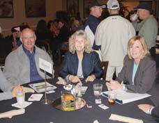
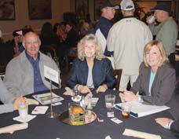

This is a SEO version of SDAR 1111.indd. Click here to view full version
« Previous Page Table of Contents Next Page »The weather cooperated, as it usu-ally does in San Diego, for the annual “Everyday Heroes Golf Tournament” held October 24 at the Riverwalk Golf Club in Mission Valley.
Proceeds benefited SDAR’s Ambassadors Foundation which helps San Diego police officers become homeowners with interest rate buy-downs and/or mortgage insurance buy-outs. A silent auction and live auction during the reception and din-ner raised additional funds for the foundation. Special guests at the event included business commentator George Chamberlin of the San Diego Daily Transcript and Assemblyman Nathan Fletcher.
Our thanks to the generous tour-nament sponsors and support-ers: Riverwalk Golf Club & Staff, USE Credit Union, Bank of America Home Loans, Bravado Awards, San Diego County Credit Union, PNC Mortgage, Quality Escrow, SignOnSanDiego. com, California Real Estate Inspection Association, Guaranteed Rate, US Bank, New Venture Escrow, Western Exterminator Company, BluFi Lending, Navy Federal Credit Union,
Harcourts Prestige Properties, Eaton Escrow, CUTCO Closing Gifts, Gateway Funding, Centennial Escrow, San Diego Police Officers Association, Buffini & Company, NixTermite, Inc., eLiveLife.com, Spa Gregorie’s, Quick-Dry Flood Services, 5-Hour Energy, and SD Silkscreen & Embroidery.


4 The San Diego REALTOR ®
NOVEMBER 2011
G O L F TO U R N AM E N T
Golf Tournament Tees Up for “Everyday Heroes”
 

This is a SEO version of SDAR 1111.indd. Click here to view full version
« Previous Page Table of Contents Next Page »